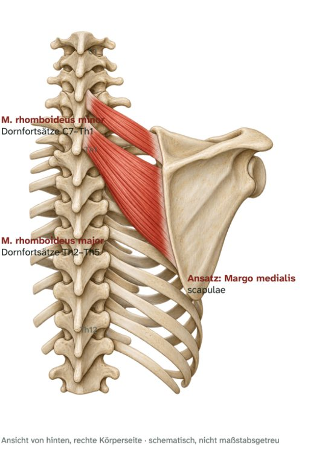

Schultergürtelmuskeln · hinten
Mm. rhomboidei
Rautenmuskeln – Ursprung, Ansatz, Innervation und Funktion

Steckbrief
M. rhomboideus minor
- Ursprung
- Nackenband und Dornfortsätze C7–Th1
- Ansatz
- Margo medialis scapulae auf Höhe der Spina
M. rhomboideus major
- Ursprung
- Dornfortsätze Th2–Th5
- Ansatz
- Margo medialis scapulae unterhalb der Spina
Gemeinsam
- Innervation
- N. dorsalis scapulae (C5)
Funktion
- Schulterblatt: ziehen es nach innen oben zur Wirbelsäule (Retraktion) und drehen die Pfanne nach unten.
- Haltung: halten das Schulterblatt flach am Brustkorb.
Zum Lernen

E-Book · Band 2 · 19,90 €
Muskel-Atlas Schulter & Arm
Im E-Book findest du zu diesem Muskel außerdem:
- Merkhilfe und typische Prüfungsfalle
- Muskelfunktionstest, Längentest und Übungen per Video-QR-Code
- Dehn- und Kräftigungsübung
- Kurz-Check mit drei Fragen und Lösungen
Weitere Muskeln: Schultergürtelmuskeln
- 01VideoM. trapeziusKapuzenmuskel · Schultergürtelmuskeln
- 02VideoM. levator scapulaeSchulterblattheber · Schultergürtelmuskeln
- 04VideoM. serratus anteriorVorderer Sägemuskel · Schultergürtelmuskeln
- 05VideoM. pectoralis minorKleiner Brustmuskel · Schultergürtelmuskeln
- 06VideoM. subclaviusUnterschlüsselbeinmuskel · Schultergürtelmuskeln